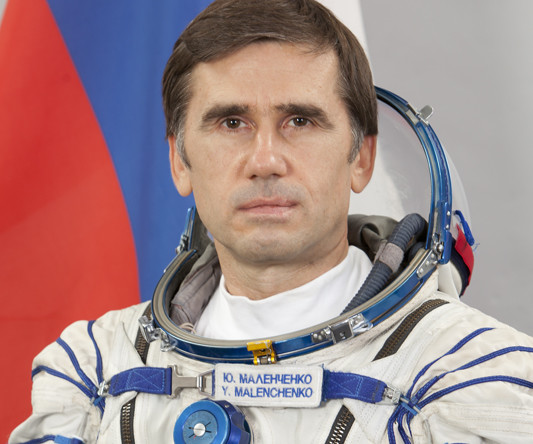

" осмонавт должен быть способным овладевать всЄ новыми и новыми рабочими навыками и умени€ми, которые ему придетс€ примен€ть в космическом полете, то есть становитьс€ универсалом. роме того, это означает, что он должен быть готов всю жизнь учитьс€. онечно, он должен обладать хорошим здоровьем, быть выносливым и психологически устойчивым человекомї.
ћаленченко ёрий,
космонавтв третьем пункте меню.